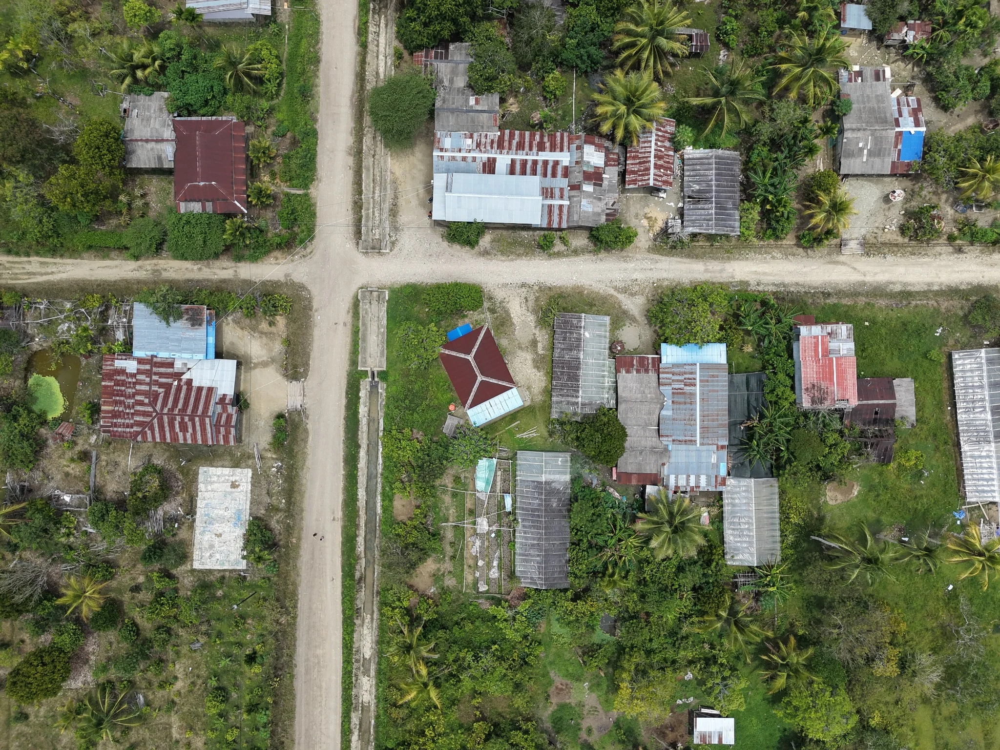
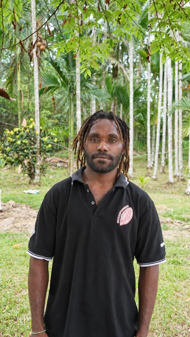
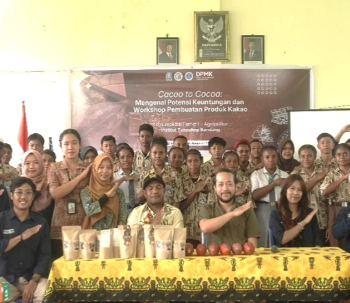

Tim Ekspedisi Patriot 1 Institut Teknologi Bandung
Kabupaten Jayapura · Papua
Profil Kawasan Lereh
Mengenal kehidupan masyarakat, potensi kakao, dan arah pengembangan agropolitan melalui data serta peta kawasan.
Angka di atas memiliki cakupan Distrik Yapsi, bukan ukuran khusus tapak pengembangan agropolitan.
Jelajahi Lereh
Kawasan, potensi, dan masyarakat
PROFIL LEREH
Profil Kawasan
Lokasi, sejarah, kondisi fisik, penduduk, dan infrastruktur.
PROFIL LEREHPotensi Komoditas
Kakao, sistem agribisnis, tabel komoditas, dan grafik LQ.
PROFIL LEREHPeta Kawasan
Jelajahi wilayah dan jaringan jalan pada peta interaktif.
PROFIL LEREHKelembagaan
Peran masyarakat, kerja sama antarpelaku, dan arah pengembangan.
Cerita dari kebun
Kakao dan masa depan petani muda

Kembali ke Yapsi, menekuni kakao
Dari pekerjaan di Abepura menuju kebun sendiri, Nindiron membangun penghidupan sambil terus belajar merawat kakao. Kenali kisahnya dan pengalaman Adam dalam berbagi pengetahuan dengan petani lain.
Baca cerita petaniJelajahi lebih jauh
Belajar dan mengembangkan kakao
Berita & Kegiatan
Kabar pengembangan kakao dan kegiatan masyarakat Lereh.
 Berita
BeritaTim Ekspedisi Patriot ITB Bantu Petani Lereh Perluas Pasar Kakao ke Luar Papua
Tim ITB mendampingi Gapoktan Nawa Tunas Baru menjajaki kemitraan dengan FinestCo untuk memperluas pasar kakao fermentasi. Pembelian awal lima ton direncanakan pada awal 2027.
Baca selengkapnya
KegiatanDari Kakao Lokal Menjadi Peluang Usaha!
Mengenal potensi keuntungan kakao dan belajar membuat produk olahan melalui kegiatan “Cacao to Cocoa” bersama Tim Ekspedisi Patriot 1 Agropolitan ITB.
Baca selengkapnya